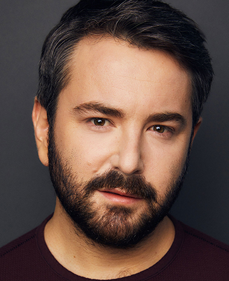
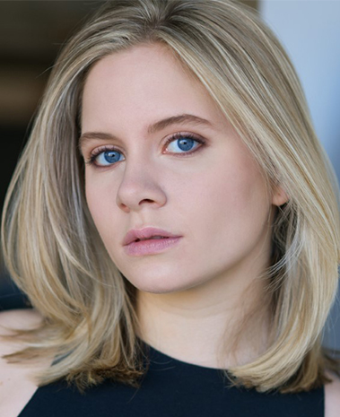

Актеры бродвейской постановки
| Актер |
Основная информация |
Актер |
Основная информация |
|  |
Алекс Брайтман. Исполняет роль Битлджуса. Известен по роли Дьюи Финна в мюзикле "Школа Рока". |
 |
Элизабет Титер. Исполняет роль Лидии Дитц. Известна по роли Джейн Бэнкс в мюзикле "Мэри Поппинс". |
|
Керри Батлер. Исполняет роль Барбары Мейтлэнд. Известна за роль Миссис Джонс в мюзикле "Дрянные девчонки". |
|
Дэвид Джозефберг. Исполняет роль Адама Мейтлэнда. Известен за роль Оги в мюзикле "Официантка". |
|
Адам Даннхайзер. Исполняет роль Чарльза Дитца. Известен за роль Дэнниса в мюзикле "Рок на века". |
|
Лесли Крицер. Исполняет роль Делии Дитц. Известна за роль Серены в мюзикле "Блондинка в законе". |
Актеры тура по США
| Актер |
Основная информация |
Актер |
Основная информация |
|
Джастин Колет. Исполняет роль Битлджуса. Известен за роль Дьюи Финна в мюзикле "Школа Рока". |
|
Изабелла Эслер. Исполняет роль Лидии Дитц. Это ее профессиальный дебют. |
|
Бритни Колман. Исполняет роль Барабары Метлэнд. Известна за роли в мюзиклах "Компания", "Тутси" и др. |
|
Уилл Бертон. Исполняет роль Адама Мейтлэнда. Известен за роль Амброуз в "Привет, Долли!". |
|
Джесс Шарп. Исполняет роль Чарльза Дитца. Известен за роль Гомеза в мюзикле "Семейка Аддамс". |
|
Кейт Мэрайли. Исполняет роль Делии Дитц. Известна за роли в мюзиклах "Моя милая леди", "Выпускной" и др. |
Креативный каст
Музыка и слова: Эдди Перфект
Книга: Скотт Браун Энтони Кинг
Дирижер и ответственный за музыку, оркестр, импровизированную музыку: Крис Кукул
Хореография: Коннор Галлагхер
Директор: Алекс Тимберс